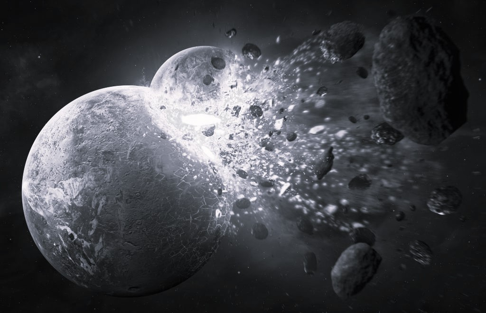
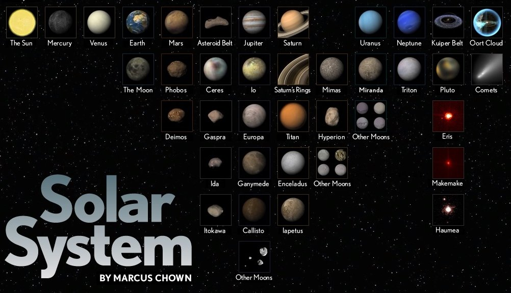
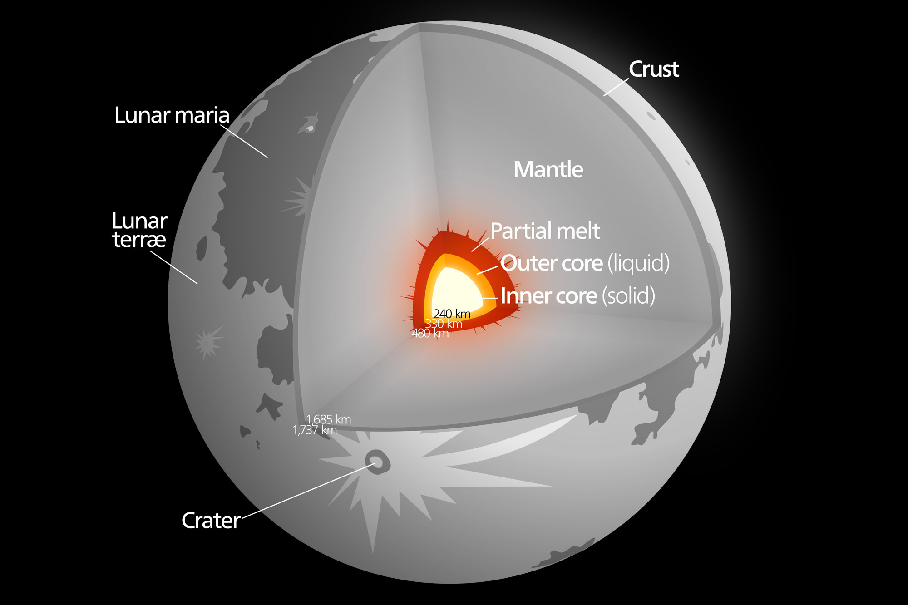

"The Moon is our nearest neighbor in space - only about a quarter of a million miles away -
and is our faithful companion, staying together with us as we journey around the Sun." — Patrick Moore
What is a moon?

A moon is defined to be a celestial body that makes an orbit around a planet, including the eight major planets, dwarf planets, and minor planets. A moon may also be referred to as a natural satellite, although to differentiate it from other astronomical bodies orbiting another body, e.g. a planet orbiting a star, the term moon is used exclusively to make a reference to a planet’s natural satellite. The first moons to be discovered outside of the Earth’s moon were the Galilean moons of Jupiter, named after astronomer and discoverer Galileo Galilei. The moons Io, Europa, Ganymede, and Callisto are Jupiter’s largest and only the first four to be revealed, as to date, the planet has 63 moons.
How did the Moon form?
'There used to be a number of theories about how the Moon was made and it was one of the aims of the Apollo program to figure out how we got to have our Moon,'said Researchers. Prior to the Apollo mission research there were three theories about how the Moon formed. The evidence returned from these missions gave us today's most widely accepted theory.
- Capture theory suggests that the Moon was a wandering body (like an asteroid) that formed elsewhere in the solar system and was captured by Earth's gravity as it passed nearby.
- The accretion hypothesis proposes that the Moon was created along with Earth at its formation.
- The fission theory suggests Earth had been spinning so fast that some material broke away and began to orbit the planet.
- The giant-impact theory is most widely accepted today. This proposes that the Moon formed during a collision between the Earth and another small planet, about the size of the planet Mars. The debris from this impact collected in an orbit around Earth to form the Moon.
Why is the moon called Luna?
Although human beings have been aware of our planet’s Moon for thousands of years, it wasn’t until the early 1600s that Galileo Galilei discovered that our planet was not unique, when he spotted a number of Jupiter’s moons. In that sense, our planet’s “moon” only got that name because it was the first of such objects to be discovered by Earth-bound stargazers. Since then, many large objects have been discovered that orbit other planets, and since they behave in the same way as our lunar guardian, they are called “moons”.
Furthermore, the name “the moon” is only the English version of the word, and in fact, the moon has been known by many names throughout human history, including Luna, perhaps its most famous name. Luna is the Latin name for our closest celestial neighbor, while the Greeks called it Selene. The Chinese name for the moon is Chang’e, and the Egyptian god of the moon was named Thoth, and the name they often gave to our nearby satellite. It has been called Tsukiyomi by the Japanese, Sin by the Mesopotamians, and Mani by certain Germanic tribes.Most of these primitive (and current) names for the moon are derived from gods and goddesses, because in the early millennia of human civilizations, the moon was highly present in origin stories, pagan traditions, and other polytheistic cultural ideas.
General Characteristics
The Moon is a spherical rocky body, probably with a small metallic core, revolving around Earth in a slightly eccentric orbit at a mean distance of about 384,000 km (238,600 miles). Its equatorial radius is 1,738 km (1,080 miles), and its shape is slightly flattened in a such a way that it bulges a little in the direction of Earth. Its mass distribution is not uniform—the centre of mass is displaced about 2 km (1.2 miles) toward Earth relative to the centre of the lunar sphere, and it also has surface mass concentrations, called mascons for short, that cause the Moon’s gravitational field to increase over local areas. The Moon has no global magnetic field like that of Earth, but some of its surface rocks have remanent magnetism, which indicates one or more periods of magnetic activity in the past. The Moon presently has very slight seismic activity and little heat flow from the interior, indications that most internal activity ceased long ago.
Earth's Moon has a core, mantle, and crust. The Moon’s core is proportionally smaller than other terrestrial bodies' cores. The solid, iron-rich inner core is 149 miles (240 kilometers) in radius. It is surrounded by a liquid iron shell 56 miles (90 kilometers) thick. A partially molten layer with a thickness of 93 miles (150 kilometers) surrounds the iron core. The mantle extends from the top of the partially molten layer to the bottom of the Moon's crust. It is most likely made of minerals like olivine and pyroxene, which are made up of magnesium, iron, silicon, and oxygen atoms. The crust has a thickness of about 43 miles (70 kilometers) on the Moon’s near-side hemisphere and 93 miles (150 kilometers) on the far-side. It is made of oxygen, silicon, magnesium, iron, calcium, and aluminum, with small amounts of titanium, uranium, thorium, potassium, and hydrogen. Long ago the Moon had active volcanoes, but today they are all dormant and have not erupted for millions of years.
Potential for Life

The many missions that have explored the Moon have found no evidence to suggest it has its own living things. However, the Moon could be the site of future colonization by humans. The discovery that the Moon harbors water ice, and that the highest concentrations occur within darkened craters at the poles, makes the Moon a little more hospitable for future human colonists.